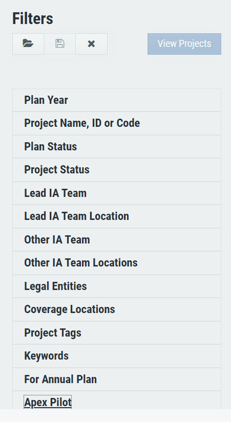
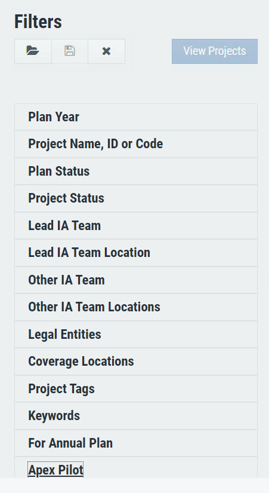

Audit Plan Management is a planning and data analytics platform that helps you plan projects, allocate resource and manage staff for
financial auditing projects. It also helps users explore, analyze and share real-time project analytics data easily.
Projects are planned, managed and tracked on the APM platform by the auditors. APM is a legacy platform and had a lot of shortcomings,
to address the same a new dashboard is required where the auditors can manage the projects , financial analysts can see the feedback and product owners
can get the exact insights required for the improvement.
Role and Responsibility
Started from research, conceptualising the flows to creating the visual design, conducting user feedback sessions and communicating the interaction to developers.
Problem
The interface of APM Platform currently does not allow the users to go through the project details
of the project created in the past, add roles and edit the project on the go. The existing users find interface
very non-intuitive and new users find it very difficult to operate.
It also does not have a built-in analytics tool and takes the user to the third party app
to view data analytics.
A better layout functionality
can help make audit board more compelling and engaging and make the product more complete as
a planning and management tool.
User Persona & Interviews
To understand the user pain points better, interviews were conducted with users using the existing platform.
There are mainly 3 user personas for whom the product was built :
User Stories
After understanding their actions, feelings, pain points and desired outcomes we went ahead to write the user stories
1. As an auditor, I want to make new projects on a single click, get project information in a structurised way and edit it on the go.
2. As a financial analyst, I want to see all the projects I am assigned to, filter them easilt based on year, coverage, type and other parameters.
3. As a project owner, I want to see analytics and metrics of the project to get insights.
Goals
Our high level goals were :
1. Allow users to create and organize projects in one click, display project information effectively.
2. Allow users to add new projects by prompting them to add only compulsory information and not overwhelm them
to fill information that can be filled later in the life cycle as the project progresses.
3. Allow users to navigate between the sections of project details easily, jump quickly without having to scroll down to a particular section.
4. Allow users to view metrics of their project in visually appealing and insightful manner.
Discovery
Having defined the area we had to focus on, we moved on to ideation. Starting with analysing the existing tool.
We further tried to understand how users currently address this problem. We investigated the mental model around how users navigated through the existing platform.
This is the current dashboard being used for audit plan management. It does not have a clear hierarchy for sections,
project summary information and intuitive interface.

The filter options are being set one by one and there is no real time response after one filter is set.
 
